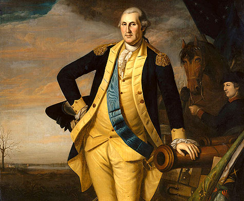

George Washington nació el 22 de febrero de 1732 a orillas del río Potomac, en la finca de Bridge's Creek, en el antiguo condado de Westmoreland, en el actual estado de Virginia. Pertenecía a una distinguida familia inglesa, oriunda de Northamptonshire, que había llegado a América a mediados del siglo XVII y había logrado amasar una considerable fortuna. Su padre, Augustine, dueño de inmensas propiedades, era un hombre ambicioso que había estudiado en Inglaterra y que al enviudar de su primera mujer (Jane Butler, que le había dado cuatro hijos) contrajo segundas nupcias con Mary Ball, miembro de una respetable familia de Virginia que le dio otros seis vástagos, entre ellos George.
Un colono con vocación militar
Escuchando los relatos de su hermanastro se despertó en George una temprana vocación militar, y a los catorce años quiso hacerse soldado, aunque tuvo que desechar la idea ante la férrea oposición de su madre, quien se negó a que siguiera la carrera de las armas. Dos años más tarde comenzó a trabajar de agrimensor, como asistente de una expedición para medir las tierras de lord Fairfax en el valle de Shenandoah.
La lucha por la independencia

El final de la guerra de los Siete Años, oficializado el 10 de febrero de 1762 con la firma del Tratado de París, significó la renuncia de Francia a sus pretensiones sobre Acadia y Nueva Escocia y la plena soberanía de Inglaterra sobre Canadá y toda la región de Luisiana, salvo Nueva Orleans. Pero la discrepancia mercantil entre Londres y sus colonias aumentó a raíz de esta conclusión, pues el gobierno inglés consideró que todas sus posesiones habían de cooperar en la amortización de los gastos ocasionados por la guerra, ya que todas ellas se habían beneficiado de sus resultados.